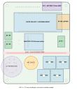
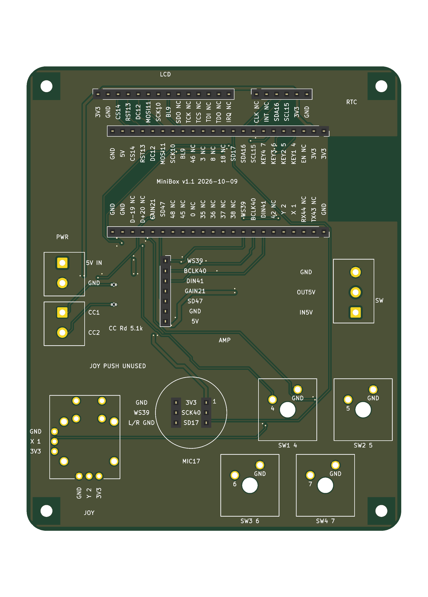
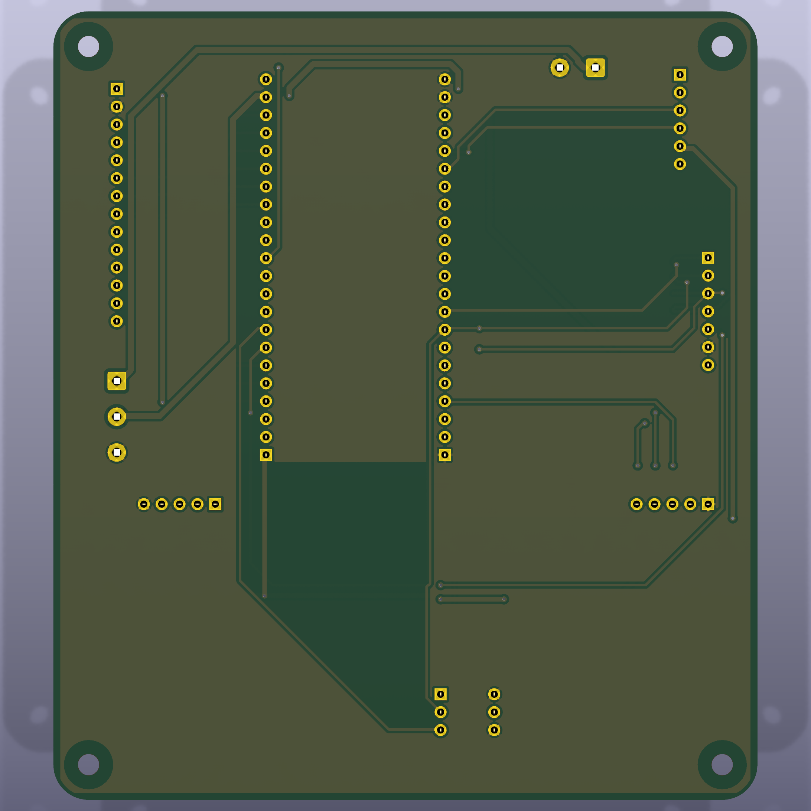
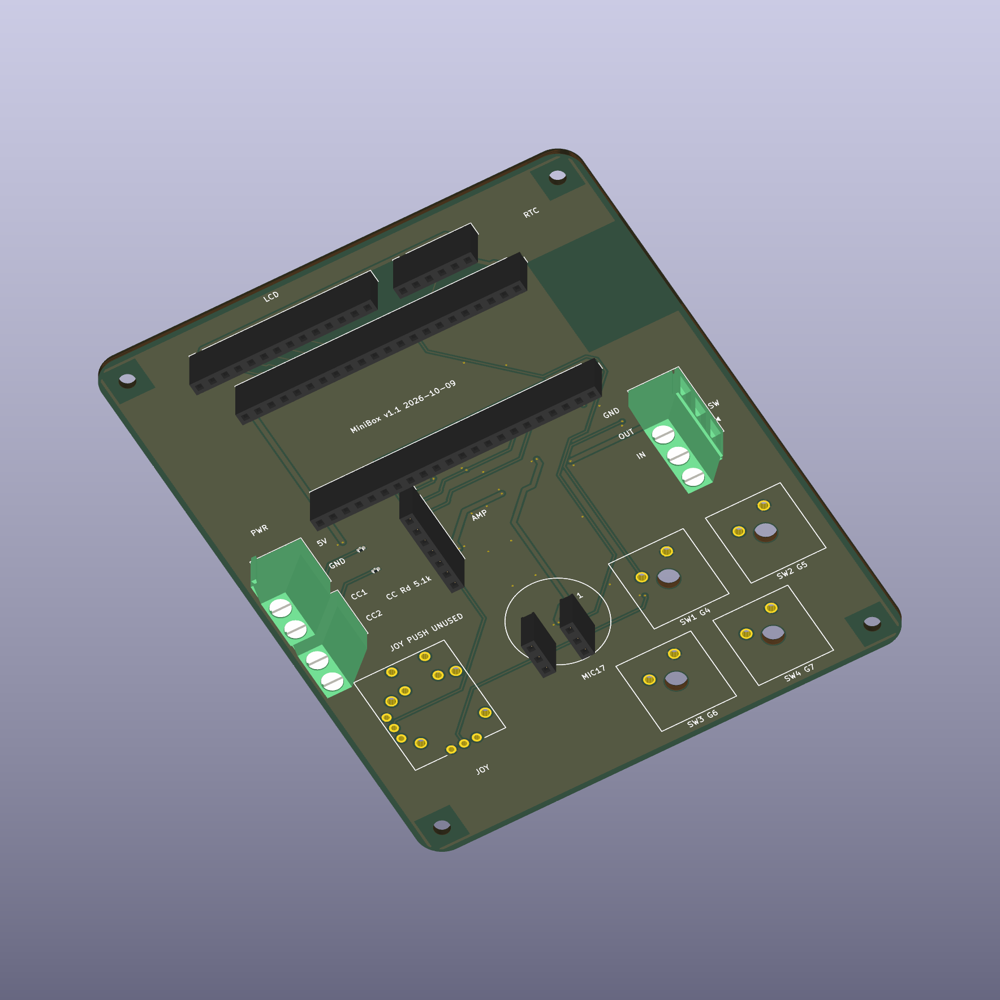

Minibox v1.1 载板改版
2026-10-09 · 工程目录 C:\gitroot\minibox\kicad · 四层 · 正面装配
1. 布局与效果图




母座使用 KiCad 库模型；指定WJ500V端子、精确键轴和摇杆没有已核验的3D模型， 因此真实PCB渲染主要显示其焊盘及封装轮廓，不用类似型号冒充。 完整尺寸以孔图和逐孔表为准，不能用像素量测生产尺寸。 新版中文尺寸/材质图例： 正面图例 / 背面图例； 尺寸和孔距读取自当前PCB，蓝色尺寸线不属于生产丝印。


| 约束 | 当前设计值 / 注意事项 |
|---|---|
| 紧凑外形 | 94.5×117 mm、R5；相对100×112 mm的包围矩形面积只缩小约1.28%，不以牺牲安装空间换面积。 |
| 安装孔 | 4×Ø3.0 mm NPTH，孔中心距84.5×107 mm；Ø3是偏紧的M3配合，工厂及螺钉公差须确认。 |
| 四键 | 横向/纵向标准19.05 mm节距，下排向左错半单位9.525 mm。 18 mm键帽间隙1.05 mm；18 mm是最大允许包络，不是已确认键帽料号。 |
| 麦克风 | 中心(46.5,90.25)，左移2/下移2.5 mm；Ø19.5包络上沿Y80.5与键帽齐平，至最近键帽约1.22 mm、至摇杆活动圈约2.00 mm。 |
| 摇杆 | 中心(20.75,97.5)，左移1.25/下移4.5 mm；半径15 mm，距板边0.75、距螺丝保护区约0.77 mm，不相交。 |
| 红线 | Y=76 mm；上部实体≤74，下部操作包络≥78。 这是装配分区，不是禁止走线跨线。 |
| 功放 | 平放27×24 mm预留，下缘Y=72，上排键帽上缘Y=80.5；不压到键盘区。 |
| RTC / ESP32 | RTC连电池预留27.5×12 mm，至ESP32估计本体3.03 mm。 电池厚度与模块本体必须实测；不是厂商尺寸保证。 |
| 天线 / 接线端子 | ESP32 USB朝左、天线朝右，估计本体留在板内；全四层天线禁铜。 J8/J9压线口向左，J7向右，线缆弯折和螺丝刀还须装配确认。 |
| 端子适配 | J7采用C72334，J8/J9采用C8465；真实封装包含10 mm本体深度及0.60 mm拼接凸耳。 孔径改为1.50 mm，焊盘仍2.60 mm；J8/J9一起上移1 mm以避开分界带，线序不变。 |
2. GPIO 接线及精确器件
| 器件 | 信号 / GPIO | 装配与功能 |
|---|---|---|
| SW1–SW4 | 4 / 5 / 6 / 7，各轴另一触点接GND | HanElectricity CPG151101D13，C49234235， 直接焊接，无热插拔母座、无VCC。按下接地、内部上拉；GPIO5保持按住录音/松开回放。 |
| JS1 | VR1滑动端GPIO1，VR2滑动端GPIO2；端点1=GND、端点3=3.3V | YTL YV13S-L7.85-B10Ka(60)-0-DL01， C37323747，直接焊接、竖放。指定型号有按压机构，但用户决定不使用，GPIO42释放。 四个按压脚及固定脚无网络，不猜触点配对。 |
| RTC J5 | SDA16 / SCL15 / 3.3V / GND | 互换GPIO以避免交叉；CLK/INT NC；确认I²C上拉为3.3V。当前应用不初始化RTC。 |
| INMP441 J3 | SD17 / WS39 / SCK40，L/R=GND | 3.3V。两个独立1×3母座，排距7.62 mm，不装成普通2×3。 |
| MAX98357 J4 | DIN41 / BCLK40 / LRC39 / GAIN21 / SD47 | VIN=开关后5V。GAIN默认高阻，SD仅回放使能。 扬声器接SPK+/SPK-，负端不接GND。 |
| LCD J6 | BL9 / SCK10 / MOSI11 / DC12 / RST13 / CS14 | 14脚母座线序保留；触摸/SDO NC，模块逻辑为3.3V。 |
| R1 / R2 | 各自CC→5.1 kΩ→GND | UNI-ROYAL 0402WGF5101TCE / C25905，±1%， 英制0402/公制1005；型号已核实，国内代焊库存及价格未承诺。 |
GPIO分配核对官方DevKitC-1 v1.1排针表。 Octal存储器GPIO35/36/37、原生USB19/20、UART43/44不分配。 GPIO39–41已用于I2S，不能同时外接JTAG；GPIO42、8、18未连接。 官方v1.1 RGB为38，现有实板固件仍是48，须确认开发板版本，不能自动换脚。 新PCB、固件和线缆必须同步；不要在旧板按旧接线烧录新配置。 权威完整接线表。
3. Type-C 如何接线
外接Type-C母座独立引出 VBUS、GND、CC1、CC2： VBUS→J8第1脚，GND→J8第2脚，CC1→J9第1脚，CC2→J9第2脚。 两个CC各自经5.1 kΩ下拉，不能短接CC1/CC2，也不能并联外接小板已有的Rd。 该电路提供普通5V受电端识别，不做USB-PD协商，不检测电流广告，不保证所有充电器兼容或3A输出。 载板不连接USB数据。
开关J7：第1脚5V_IN、第2脚5V_SW、第3脚GND。 正面物理排列从上到下是GND / OUT / IN，不能沿用旧端子方向。 5V_SW给开发板5V及功放，开发板3V3给逻辑模块。须确认外部5V与开发板USB同时连接时不会反灌， 并核实开发板稳压器负载。不要把3V3接到5V。
4. 嘉立创工程审核与焊接顺序
正面实际丝印已标出模块引脚功能与 GPIO 数字，例如 SDA16、BCLK40、DIN41、 KEY1 4；电源标 3V3 / 5V / GND，未连接脚标 NC。键轴两触点标数字与 GND， 摇杆两轴标 X 1 / Y 2。丝印位于 F.SilkS，不是仅供装配查看的 F.Fab。
| 项目 | 设计 / 工厂确认边界 |
|---|---|
| 四层 / 板厚 | F信号、In1 GND、In2电源走廊+GND、B信号；名义1.6 mm。 不编造已获工厂确认的介质、铜厚或阻抗结构。 |
| 规则 | 信号0.20/0.20 mm，普通过孔0.60/0.30 mm，铜到边≥0.50 mm， PTH孔边距≥0.45 mm，丝印≥1.0 mm高/0.15 mm笔画；具体孔径遵从精确封装。 |
| 地过孔精简 | 62个减至23个，删除39个重复缝合孔；保留换层过孔3 mm内回流和分区地铜连接。 不沿同层I2S走线机械地等间距加孔，保留连续参考地平面。 |
| 避让焊盘 / 层间对齐 | 走线到异网焊盘≥0.30 mm，5V焊盘≥0.50 mm。 核对四层铜的全部镀通孔/过孔中心及PTH/NPTH孔径、坐标，统一板框左下原点； 这是数字文件对齐检查，不代替工厂实物对位公差。 |
| 插件焊环 | 母座1.0孔/1.7盘，端子1.5孔/2.6盘（径向0.55 mm），轴1.5孔/2.1盘， 均≥0.20 mm径向推荐值；普通过孔径向0.15 mm不与插件标准混用。 |
| 电源 | 3V3线0.65 mm、5V线0.80 mm；不能据此宣称3A温升/压降已合格。 需实际电流预算、订单铜厚、窄入口及热连接复核。 |
| SMT | 仅正面R1/R2两个0402，单独SMT BOM/CPL。 经济型官方表支持0402/四层/单面贴片+插件，不能推断本板全部异形插件已获批准。 |
| 插件 | 7条母座、3个端子、4个机械轴、1个摇杆，正面插装、背面焊接。 J3拆为J3A/J3B两个1×3；插件坐标不是自动SMT贴装指令。 |
| 热工艺 | 先回流电阻，再装插件/异形件，最后插ESP32/RTC/麦克风/功放模块。 键轴的波峰焊测试260±5°C/5s、摇杆锡焊测试235±5°C/3±0.5s及耐热260±5°C/5s， 不等于允许整板回流；工厂须依据各手册批准工序。 |
| 工艺边 / 数量 | 经济型不强行套用标准型Mark/工艺边要求，选择标准型则按工厂模板确认。 用户现接受5片全部焊好的询价方案；制作5片、装配5片，每片17件， 先核对全焊工艺与完整报价， 不得自动增加数量、付款或修改最终R5外形。 |
国内官方能力核对日期2026-10-09；详见 规则与来源。 PTH成品孔公差+0.13/−0.08 mm、NPTH±0.10 mm； 精确键轴/摇杆推荐孔及实物最大引脚配合仍需工厂确认。
5. 文件怎么使用
| 文件 | 用途 |
|---|---|
| 纯Gerber/钻孔ZIP | 当前v1.1 PCB的CAM审核候选，四个铜层、双面阻焊/丝印、正面钢网、板框、分开PTH/NPTH。 |
| SMT BOM / SMT CPL | 仅R1/R2；C25905需核对国内装配库存。 坐标以板框左下角为零，X向右、Y向上、Top、mm；上传预览时核对角度及位号。 |
| 全板BOM / 嘉立创专用坐标 | 包含全部17个物理件的型号与C编号及工厂库中心/角度修正；母座/端子插装及焊接工艺仍待工厂确认。 Mid为电气焊脚中心平均值，不保证外壳中心；KiCad角度不等于工厂库零角。 |
| 逐孔/网名表 / 实际孔位及装配图 | 按PCB焊盘号核对前后面、线序、孔径、NC及J3两条母座。 |
| 版本、几何、哈希 / DRC报告 | 核对导出时的实际PCB/Gerber SHA-256、机械间隙及未决审核项。 |
| 完整工程审核合集 | 文件生成并核对后用于工厂人工审核，不是纯Gerber上传ZIP，不包含完整精确装配3D模型。 |

旧 minibox-carrier-jlcpcb.zip、旧顶层装配CSV/询价ZIP/PNG对应v1.0，
尺寸及GPIO已经失效。勿混用。本次坐标原点在KiCad为(5,120) mm：
X导出=X_KiCad−5，Y导出=120−Y_KiCad；Gerber/钻孔/CPL使用同一原点，不镜像正面文件。
6. 交给工厂和上电前仍须确认
已指定母座及端子的实物插装公差、焊接工艺；ESP32实物排距与天线尺寸； RTC电池最大厚度、功放与麦克风外形；键帽/摇杆帽实际全行程； 孔径公差及螺钉配合；国内物料库存、插件焊接温度、工艺边与最小批量； 真实叠层、供电电流、热连接和USB反灌；CPL工厂零角和贴装预览。 这些事项未确认前，文件始终是草稿，不可生产。
断电检查CC1/CC2各约5.1 kΩ对地、无CC互短、四键按下分别接地， 检查5V_IN/5V_SW/3V3极性和扬声器输出。 先限流上电，再观察四键显示及GPIO5录放音。RTC/摇杆当前未在应用初始化， 不能宣称完整功能已实测。固件只构建，不自动烧录。
精确型号资料已合并到hardware_references 并记录SHA-256。
图纸与制造候选、工厂批准、采购及实物测试是不同阶段。